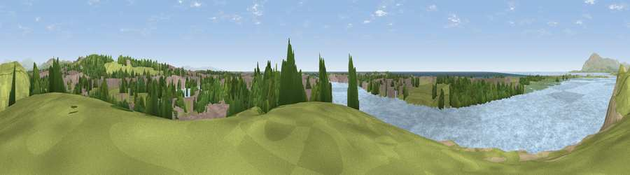

Viewpoint near North Scale
#12468 in England · top 57% of its area beats it · near North Scale · path 176 mWhere it is
The exact computed spot (SD 18875 70825). Click the marker for map links.
Public access: the nearest public right of way is about 176 m away — the final stretch may cross private land. Computed from Natural England's CRoW access layer and OpenStreetMap rights of way — not the legal definitive map. Always verify locally.
The view, rendered

A 360° render of this exact spot computed from the terrain model, tree cover and land cover — summer colours, afternoon light, calibrated against photographs of famous viewpoints. Real trees, hedges and buildings will differ in detail.
The panorama
Grey silhouette: terrain skyline in each direction (720 bearings, Earth curvature and refraction included). Dashed green: skyline with trees (+15 m) and buildings (+8 m) as obstacles. Blue strip: how far the ground is visible on each bearing.
Where the view opens
Wedge length = distance to the farthest visible ground on that bearing (vegetation-aware). Rings at 10, 25 and 50 km.
What fills the view
50% water · 23% grassland · 13% built-up · 11% woodland · 2% bare ground ·
Angular shares of the visible panorama (visual magnitude), not map area. Landscape diversity 0.57 (0–1 Shannon).
Key numbers
More beautiful places nearby
The staircase of upgrades: each row has a higher view potential than everything closer. Driving times are estimates from straight-line distance, calibrated against real road routing — check an actual route before setting out.
| Place | Direction | Drive | Score |
|---|---|---|---|
| Viewpoint near North Scale | N · 0 km | ~1 min | 67.8 |
| Viewpoint near Newton-in-Furness | NE · 2 km | ~5 min | 68.0 |
| Viewpoint near Stank | E · 4 km | ~9 min | 72.3 |
| Viewpoint near Ireleth | NE · 6 km | ~13 min | 80.7 |
| Viewpoint near Soutergate | NNE · 10 km | ~19 min | 83.6 |
| Viewpoint near Whicham | NNW · 14 km | ~25 min | 86.6 |
| Viewpoint near Whitbeck | NNW · 15 km | ~27 min | 88.1 |
| Viewpoint near Whitbeck | NNW · 16 km | ~28 min | 88.3 |
54.12685, -3.24288 · source: screening · position refined by local search. Computed location — check access rights before visiting.